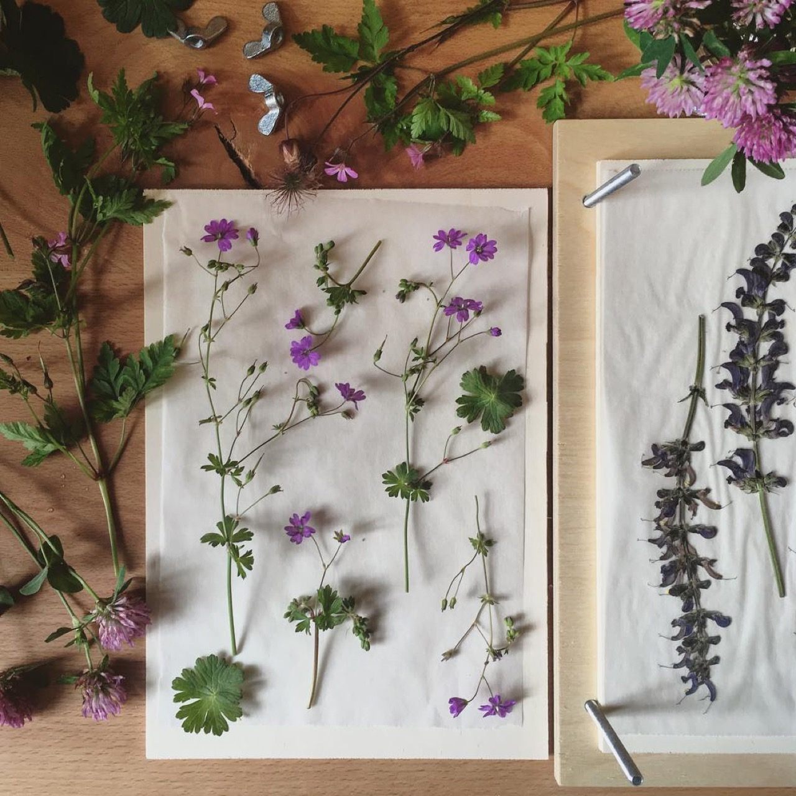

Fiber art and textile design represent artistic practices working with fiber, thread, and fabric materials, bridging traditional craft traditions with contemporary conceptual art and design innovation. Contemporary fiber artists employ traditional techniques including weaving, embroidery, and felting alongside digital design and unconventional material combinations. Fiber art encompasses functional objects including clothing and household textiles alongside non-functional fine art installations and sculptures. The practice celebrates traditional knowledge and sustainable approaches while engaging with contemporary art concerns regarding identity, environment, and social meaning. Fiber artists demonstrate that traditional craft materials and techniques support sophisticated contemporary artistic practice and conceptual exploration.
Lindsay Buck Catalogues Wildflower Specimens

Previous articleNow is a Great Time to Improve Your Handwriting
Next articleThis Illustrator Is All About Flower Power